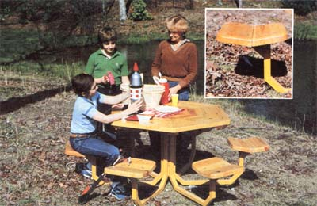
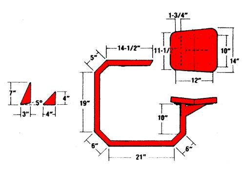
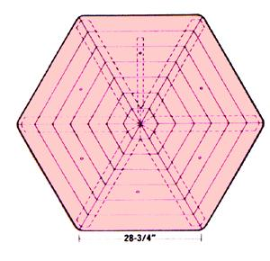
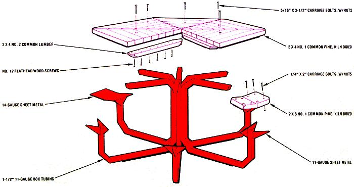
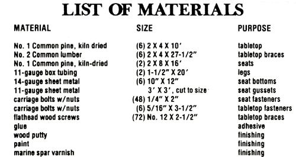
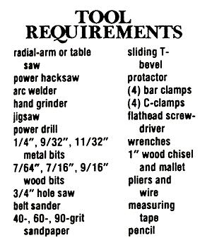
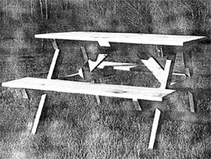
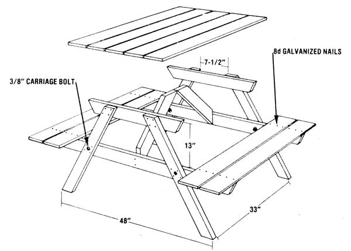
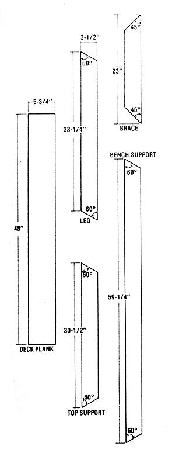

For those of you who have spent time fighting for a seat at a traditional outdoor repast . . .
One of the most welcome new attractions at the Eco-Village is a natural foods restaurant, which features homemade breads, soups, salads, and other wholesome fare. In keeping with the rustic surroundings, patrons are seated at MOTHER's own homebuilt "picnic" tables. These sit-down accommodations are, however, a little out of the ordinary. Indeed, we think you'll agree with us that the polygonal seaters represent the height of the craftsman's art.
To suit the size of your own family or circle of friends, you can build a table similar to the one shown here . . . having as few as two stools or as many as you could wish for. We've built two-, three-, four-, five-, and six-position units, and each is stable when any combination of the seats is occupied. Whatever the number, every diner has a fixed perch-undisturbed by the comings and goings of other people at the table-and faces a sizable square-edged surface (for convenient eating and elbow propping).
In addition, our quasi-circular tables take up less space in our restaurant than would conventional models and allow us to set up the floor plan for less regimented traffic patterns than are usual. In other words, we find the tables to be unique and practical, as well as attractive.
Though this shop project could be divided into separate metal- and woodworking stages, you'll make the best use of your time by combining the different tasks into a well-organized series of steps. Thus, you can turn to cutting and welding steel while glue is drying, and then get back to "wood butchering" as the metal cools. In any event, we estimate that it will require about 40 hours to complete the undertaking, using the power tools we've included in the accompanying list. Now here's how to duplicate the Eco-Village designs for your own alfresco dining!
Step 1. Form the six inner wood triangles by making 30 ° cuts across a pine 2 X 4 on a radial-arm or table saw. This may demand some practice, since even very small cutting errors will show up dramatically when you try to fit the six pieces together.
Once you're satisfied with the fit, glue the triangles together to form a hexagon . . . wrap a strand of wire around the assembly . . . and twist the ends of the wire with a pair of pliers to clamp the six blocks together firmly. Set this aside to dry overnight.
Step 2. While that inner hexagon is curing, cut the 1-1/2" box tubing into six 81-1/2" lengths, designating the location of the six bends on each section to match the drawing. Then set your sliding T-bevel to a 67-1/2° angle (using a protractor to position its blade) and mark across the 1-1/2" tubing at each bend to form two intersecting diagonal cuts with a total included angle of 45 °.
These marks describe notches that must be removed from the steel to allow it to bend. Don't cut all the way through the metal, though. Just use a power hacksaw to cut down to the flat, opposite side . . . so that the other 1-1/2" face can become a hinge for the bend. Now, go ahead and curve the tubes to the shape shown.
Step 3. Set up a roughly right-angled jig on the top of your welding table, using heavy bars held down by C-clamps. (Actually, the jig should be positioned at about a 95 ° angle - to include two bends - because the joints will draw together somewhat as they cool after being welded.) Set one of the bent sections in the device and weld along the three open sides of one corner. Then wait until this first joint has cooled . . . so that you can check the finished angle and adjust the jig accordingly for future welds. We may sound overly fussy on this point, but when you consider that a mere slip of 5 ° on each of six inside joints results in a total of 30° in error. . . well, you can see that this caution is crucial to insuring that the legs are square to the floor and to the tabletop!
When you're certain that the jig is producing accurate 90° corners, you can go on to weld up all the remaining joints on the six legs, grinding them afterward to remove burrs.
Step 4. Returning to the wooden tabletop, cut out the second set of 2 X 4's (again, at a 30° angle), using the inner hexagon for the short-side measurement on each board. Throughout this project, you should cut pieces - whether wood or steel - to fit, rather than rigidly relying on the drawings. You'll be able to glue a total of only four new, opposite-facing ring boards at a time since they must be cinched across the top with bar clamps. One set of clamps can be positioned beneath the tabletop, with another going across the upper surface. (We tried screwing each new ring to the hexagonal center, but that didn't work very well.)
At most, you'll be able to complete one new ring per day-because of the hour needed for the glue to cure - so it will take a total of seven days for the tabletop to attain its full width. The rest of the time you can devote to making the seats and the other metal parts.
Step 5. Using your hacksaw, cut out twelve 4" right isosceles triangles from the 11-gauge sheet metal. Then weld these seat gussets to the insides of the seat posts in accordance with the full-table drawing. When the welds are cool, remove any burrs, and grind the top of each seat post to a 5° angle that slopes away from the center.
Step 6. Bend each of the six 10" X 12" sheet-metal seat brackets up 10° across the center of its 12" side to form a 170° angle. (We found that a seat with this configuration provides thigh support and is far more comfortable than the conventional flatboard rest.) With that done, you can drill eight 9/32" holes 1-1/8 inches in from the edges of the bracket . . . in the pattern shown in the drawing.
Now, position each seat bracket with one 10" edge 1-3/4 inches away from the inside lip of the seat post, and tack the sheet metal to the box tube. . . on the inner contact surface only.
The rear seat gusset is formed by cutting a 3" X 7" right triangle from 11-gauge sheet metal, adjusting the base to fit the obtuse angle between the seat post and the seat bracket. This should involve trimming a 5 ° wedge from the triangle's base, but earlier errors may force you to compensate in order to create a perfect fit.
Once you've prepared your six rear gussets, tack one to the base of each seat bracket, using welds no more than 1" long per section. (Excessive welding will warp the bracket beyond use.) Next, weld the bases of the triangular pieces of steel to their seat posts.
Step 7. Cut the two-piece seats from the 2 X 8 board to the dimensions shown. Bevel the faces where they will touch (to 5 ° on each board, to fit the angle of the bracket) . . . round the four corners with your jigsaw . . . and smooth down the edges with a belt sander, file, or coarse sandpaper.
Step 8. After all seven rings of the tabletop have been glued together, saw off six lengths of 2 X 4 to 27-1/2" to use as braces for the hexagon. Cut one end of each board to a 60° point (so that all the braces will fit together at the center) . . . and make a 120° juncture on the other end to match the shape of the outer lip of the tabletop. At the same time, it's a good idea to round off the edges on the broader ends to prevent occupants from banging their knees on sharp wood.
Check to be sure that the braces fit together fairly well at the center, and then secure them to the underside of the tabletop with the No. 12 X 2-1/2" wood screws. To facilitate setting the threaded fasteners, you may want to bore lead holes with a 7/64" bit. Furthermore, all of the screws should be countersunk, using a 7/16" bit, to a depth of no more than 1/2 inch to prevent clothing from getting snagged on the heads.
Step 9. In order to make the table legs fit snugly to the top, the braces have to be notched out near the center. To determine where to put these channels, place the table top-down on the floor or on a bench, and using a leg as a pattern-mark the location directly onto the board. (Note: The legs should be centered between the braces.) Next, with a wood chisel and mallet, cut out the notches.
After you've made all of the cuts, the legs for the table can actually be jigged up, using the still upside-down tabletop as a guide. Once the tubes are all in place and properly aligned, make 4" welds at the top and bottom . . . where the edges of the six square sections meet.
Now, turn the legs and top upright to see whether the structure rides evenly on its base and the legs sit level on the floor. If the supports aren't true (were all of those bends really 45°?), you'll have to force them into place by bending or relieving the joints.
Step 10. Coat the metal parts with primer and then with enamel paint.
Step 11. Bore 11/32" holes through the tabletop and the tubular metal supports directly below it at the six points (on the fifth wooden hexagon) where those steel braces lie. With a 3/4" hole saw, countersink the top of each opening 1/2 inch deep, and fasten the table and legs together with 5/16" X 3-1/2" carriage bolts and nuts.
Step 12. Locate the seat halves on their brackets, mark the positions for the needed mounting holes by using the steel bracket as a template, and drill through the seat boards with a 9/32" metal bit. Run a 1/4" carriage bolt down through each hole, and snug the seats down with nuts from below.
Step 13. To round the corners of the hexagonal tabletop, mark off the edges, using a one-quart paint can lid as a template. Then follow the markings with a jigsaw.
Step 14. Flatten irregularities in the surface by rubbing them with 40-grit sandpaper, inspecting the joints as you sand. If you used thoroughly dry boards, there shouldn't have been much tendency for the seams to pull apart . . . but there are likely to be a few small gaps that need to be plugged with wood filler. And you'll want to fill in the countersunk holes on the top with putty or dowel plugs.
Now, move on to 60-grit sandpaper to smooth the top, the edges, the corners, and the seats. Finish with 80-grit paper, dust off the surface, protect the wood against the elements with a brushing of marine spar varnish . . . and stand back to admire your handiwork while you think up the guest list for your next barbecue.
We realize that not everyone has the time or the facilities to construct the "polygonal picnicker" described. Some folks may just want a low-cost, easy-to-build table for their outdoor activities. Ironically, we were faced with a similar situation ourselves last summer when we needed to build a veritable fleet of utilitarian dining structures for use by the folks who camp out at the Eco-Village. Since we were building so many tables, no one managed to keep close track of the number, but it looks to have been over 40! Because the tables had to stand up to use by thousands of visitors, we were looking for durability ... simple design ... and low cost. After kicking around a few ideas, the crew out at the Eco-Village came up with an "economy model" winner that was easy to put together and required only five different cutting patterns. Judging by their appearance halfway through the second season of use, we can safely say our platoon of $18 specials has filled the endurance bill quite well.
If you're interested in trying your hand at this nifty little table, you'll need to gather these few materials before getting started: four pressure treated 2 X 4 X 8' boards . . . three 1 X 6 X 12' boards . . . four 3/8" X 3-1/4" carriage bolts with washers and nuts ... and approximately one pound of 8d galvanized nails (get some varnish, too, if you want to coat the tabletop). The treated 2 X 4's will cost a little more than untreated ones do, but because they form the crucial structural supports, that money will be well spent. The 1 X 6's that form the bench and tabletop, though, should be conventional lumber . . . since food may come into direct contact with those surface boards, and the chemicals used to pressure-treat lumber are toxic.
To begin, saw the 1 X 6 planks into nine 48" lengths. Next, following the cutting diagrams, saw out one bench support and one leg from each of two 2 X 4's. Cut out a leg, a top support, and a brace from each of the remaining two 2 X 4's.
Start the actual construction by assembling the two end frames. Make each four-piece unit by positioning a tabletop support and a bench support beneath two legs, as shown in the accompanying illustration, and nail the components together. As you work, take care not to nail through the centers of the leg/bench support junctions, as your next step will be to drill holes at these spots, . attaching the 3/8" carriage bolts and nuts. Do this, placing the washers and nuts on the undersides of the joints (for the sake of appearance).
Stand up the two frame ends, separated by a distance of 33 inches, and connect their top supports by nailing a 1 X 6 across their centers. Next, nail another plank along the outer edge of each bench support. These decking boards should protrude about 6 inches beyond their bracers. Now,attach two planks flush with the ends of the top supports . . . and then finish the eating surface by centering a board in each of the two remaining spaces. Nail the last two 1 X 6's next to the existing bench boards (leaving a gap of about 1/4 inch between adjacent bench planks). Then carefully turn the unit upside down and attach the two 45° braces as shown.
There it is . . . your picnic table is complete! It can be used as is, or be covered with a durable, water-resistant coating such as polyurethane (or any of the various marine varnishes) to give you years of pleasurable outdoor use.
|
 STAFF PHOTOS |
 |
 |
|
 |
 |
 |
|
 |
 |
 |